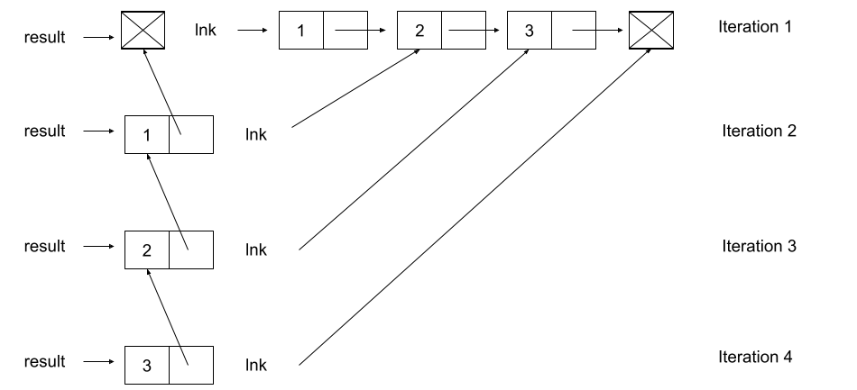

Lab 7: Linked Lists, Trees / Tree Mutation
Due by 11:59pm on Wednesday, March 9.
Starter Files
Download lab07.zip. Inside the archive, you will find starter files for the questions in this lab, along with a copy of the Ok autograder.
Topics
Consult this section if you need a refresher on the material for this lab. It's okay to skip directly to the questions and refer back here should you get stuck.
Linked Lists
We've learned that a Python list is one way to store sequential values. Another type of list is a linked list. A Python list stores all of its elements in a single object, and each element can be accessed by using its index. A linked list, on the other hand, is a recursive object that only stores two things: its first value and a reference to the rest of the list, which is another linked list.
We can implement a class, Link, that represents a linked list object. Each
instance of Link has two instance attributes, first and rest.
class Link:
"""A linked list.
>>> s = Link(1)
>>> s.first
1
>>> s.rest is Link.empty
True
>>> s = Link(2, Link(3, Link(4)))
>>> s.first = 5
>>> s.rest.first = 6
>>> s.rest.rest = Link.empty
>>> s # Displays the contents of repr(s)
Link(5, Link(6))
>>> s.rest = Link(7, Link(Link(8, Link(9))))
>>> s
Link(5, Link(7, Link(Link(8, Link(9)))))
>>> print(s) # Prints str(s)
<5 7 <8 9>>
"""
empty = ()
def __init__(self, first, rest=empty):
assert rest is Link.empty or isinstance(rest, Link)
self.first = first
self.rest = rest
def __repr__(self):
if self.rest is not Link.empty:
rest_repr = ', ' + repr(self.rest)
else:
rest_repr = ''
return 'Link(' + repr(self.first) + rest_repr + ')'
def __str__(self):
string = '<'
while self.rest is not Link.empty:
string += str(self.first) + ' '
self = self.rest
return string + str(self.first) + '>'A valid linked list can be one of the following:
- An empty linked list (
Link.empty) - A
Linkobject containing the first value of the linked list and a reference to the rest of the linked list
What makes a linked list recursive is that the rest attribute of a single
Link instance is another linked list! In the big picture, each Link
instance stores a single value of the list. When multiple Links are linked
together through each instance's rest attribute, an entire sequence is
formed.
Note: This definition means that the
restattribute of anyLinkinstance must be eitherLink.emptyor anotherLinkinstance! This is enforced inLink.__init__, which raises anAssertionErrorif the value passed in forrestis neither of these things.
To check if a linked list is empty, compare it against the class attribute
Link.empty. For example, the function below prints out whether or not the
link it is handed is empty:
def test_empty(link):
if link is Link.empty:
print('This linked list is empty!')
else:
print('This linked list is not empty!')Trees / Tree Mutation
In computer science, trees are recursive data structures that are widely used in various settings and can be implemented in many ways. The diagram below is an example of a tree.

Generally in computer science, you may see trees drawn "upside-down" like so. We say the root is the node where the tree begins to branch out at the top, and the leaves are the nodes where the tree ends at the bottom.
Some terminology regarding trees:
- Parent Node: A node that has at least one branch.
- Child Node: A node that has a parent. A child node can only have one parent.
- Root: The top node of the tree.
In our example, this is the
1node. - Label: The value at a node. In our example, every node's label is an integer.
- Leaf: A node that has no branches.
In our example, the
4,5,6,2nodes are leaves. - Branch: A subtree of the root. Trees have branches, which are trees themselves: this is why trees are recursive data structures.
- Depth: How far away a node is from the root.
We define this as the number of edges between the root to the node.
As there are no edges between the root and itself, the root has depth 0.
In our example, the
3node has depth 1 and the4node has depth 2. - Height: The depth of the lowest (furthest from the root) leaf.
In our example, the
4,5, and6nodes are all the lowest leaves with depth 2. Thus, the entire tree has height 2.
In computer science, there are many different types of trees, used for different purposes. Some vary in the number of branches each node has; others vary in the structure of the tree.
A tree has a root value and a list of branches, where each branch is itself a tree.
- The
Treeconstructor takes in a valuelabelfor the root, and an optional list of branchesbranches. Ifbranchesisn't given, the constructor uses the empty list[]as the default. - To get the label of a tree
t, we access the instance attributet.label. - Accessing the instance attribute
t.brancheswill give us a list of branches.
With this in mind, we can create the tree from earlier using our constructor:
t = Tree(1,
[Tree(3,
[Tree(4),
Tree(5),
Tree(6)]),
Tree(2)])Implementing trees as a class gives us another advantage: we can specify how we
want them to be output by the interpreter by implementing the __repr__ and
__str__ methods.
Here is the __repr__ method:
def __repr__(self):
if self.branches:
branch_str = ', ' + repr(self.branches)
else:
branch_str = ''
return 'Tree({0}{1})'.format(self.label, branch_str)With this implementation of __repr__, a Tree instance is displayed as the
exact constructor call that created it:
>>> t = Tree(4, [Tree(3), Tree(5, [Tree(6)]), Tree(7)])
>>> t
Tree(4, [Tree(3), Tree(5, [Tree(6)]), Tree(7)])
>>> t.branches
[Tree(3), Tree(5, [Tree(6)]), Tree(7)]
>>> t.branches[0]
Tree(3)
>>> t.branches[1]
Tree(5, [Tree(6)])Here is the __str__ method. You do not need to understand how this function
is implemented.
def __str__(self):
def print_tree(t, indent=0):
tree_str = ' ' * indent + str(t.label) + "\n"
for b in t.branches:
tree_str += print_tree(b, indent + 1)
return tree_str
return print_tree(self).rstrip()With this implementation of __str__, we can pretty-print a Tree to see
both its contents and structure:
>>> t = Tree(4, [Tree(3), Tree(5, [Tree(6)]), Tree(7)])
>>> print(t)
4
3
5
6
7
>>> print(t.branches[0])
3
>>> print(t.branches[1])
5
6Required Questions
What Would Python Display?
Q1: WWPD: Linked Lists
Read over the Link class in lab07.py. Make sure you understand the
doctests.
Use Ok to test your knowledge with the following "What Would Python Display?" questions:
python3 ok -q link -uEnter
Functionif you believe the answer is<function ...>,Errorif it errors, andNothingif nothing is displayed.If you get stuck, try drawing out the box-and-pointer diagram for the linked list on a piece of paper or loading the
Linkclass into the interpreter withpython3 -i lab07.py.
>>> from lab07 import *
>>> link = Link(1000)
>>> link.first
______1000
>>> link.rest is Link.empty
______True
>>> link = Link(1000, 2000)
______AssertionError
>>> link = Link(1000, Link())
______TypeError>>> from lab07 import *
>>> link = Link(1, Link(2, Link(3)))
>>> link.first
______1
>>> link.rest.first
______2
>>> link.rest.rest.rest is Link.empty
______True
>>> link.first = 9001
>>> link.first
______9001
>>> link.rest = link.rest.rest
>>> link.rest.first
______3
>>> link = Link(1)
>>> link.rest = link
>>> link.rest.rest.rest.rest.first
______1
>>> link = Link(2, Link(3, Link(4)))
>>> link2 = Link(1, link)
>>> link2.first
______1
>>> link2.rest.first
______2>>> from lab07 import *
>>> link = Link(5, Link(6, Link(7)))
>>> link # Look at the __repr__ method of Link
______Link(5, Link(6, Link(7)))
>>> print(link) # Look at the __str__ method of Link
______<5 6 7>Parsons Problems
To work on these problems, open the Parsons editor:
python3 parsonsQ2: Reverse Link
Write a function that takes in a linked list and returns a reversed version of that linked list (with elements in the opposite order). It should not mutate the original list.
>>> s = Link(1, Link(2, Link(3, Link.empty)))
>>> reverse_link(s)
Link(3, Link(2, Link(1)))
>>> s
Link(1, Link(2, Link(3)))
>>> k = Link(3, Link(5, Link(7, Link(9))))
>>> reverse_link(k)
Link(9, Link(7, Link(5, Link(3))))
>>> k
Link(3, Link(5, Link(7, Link(9))))Hint: you should iterate over the linked list. If you're having trouble starting, attempt to replicate the following diagram.

def reverse_link(lnk):
"""
Given a linked list lnk, return a new linked list which has all the
elements of lnk but in reverse order.
>>> s = Link(1, Link(2, Link(3, Link.empty)))
>>> reverse_link(s)
Link(3, Link(2, Link(1)))
>>> s
Link(1, Link(2, Link(3)))
>>> k = Link(3, Link(5, Link(7, Link(9))))
>>> reverse_link(k)
Link(9, Link(7, Link(5, Link(3))))
>>> k
Link(3, Link(5, Link(7, Link(9))))
"""
"*** YOUR CODE HERE ***"
Q3: Label Multiplier
Write a function label_multiplier that takes in a Tree and an integer val. label_multiplier should mutate the tree's labels by multiplying their original value by val.
>>> t1 = Tree(2, [Tree(4, [Tree(6)]), Tree(8)])
>>> label_multiplier(t1, 10)
>>> t1
Tree(20, [Tree(40, [Tree(60)]), Tree(80)])
>>> t2 = Tree(10, [Tree(9), Tree(8, [Tree(7), Tree(6)]), Tree(5, [Tree(4), Tree(3), Tree(2)])])
>>> label_multiplier(t2, 3)
>>> t2
Tree(30, [Tree(27), Tree(24, [Tree(21), Tree(18)]), Tree(15, [Tree(12), Tree(9), Tree(6)])])def label_multiplier(t, val):
"""
Given a tree t, mutate t so that all of the tree's
labels are multiplied by the argument val.
>>> t1 = Tree(2, [Tree(4, [Tree(6)]), Tree(8)])
>>> label_multiplier(t1, 10)
>>> t1
Tree(20, [Tree(40, [Tree(60)]), Tree(80)])
>>> t2 = Tree(10, [Tree(9), Tree(8, [Tree(7), Tree(6)]), Tree(5, [Tree(4), Tree(3), Tree(2)])])
>>> label_multiplier(t2, 3)
>>> t2
Tree(30, [Tree(27), Tree(24, [Tree(21), Tree(18)]), Tree(15, [Tree(12), Tree(9), Tree(6)])])
"""
"*** YOUR CODE HERE ***"
Coding Practice
Q4: Store Digits
Write a function store_digits that takes in an integer n and returns
a linked list where each element of the list is a digit of n.
Important: Do not use any string manipulation functions like
strandreversed.
def store_digits(n):
"""Stores the digits of a positive number n in a linked list.
>>> s = store_digits(1)
>>> s
Link(1)
>>> store_digits(2345)
Link(2, Link(3, Link(4, Link(5))))
>>> store_digits(876)
Link(8, Link(7, Link(6)))
>>> # a check for restricted functions
>>> import inspect, re
>>> cleaned = re.sub(r"#.*\\n", '', re.sub(r'"{3}[\s\S]*?"{3}', '', inspect.getsource(store_digits)))
>>> print("Do not use str or reversed!") if any([r in cleaned for r in ["str", "reversed"]]) else None
>>> link1 = Link(3, Link(Link(4), Link(5, Link(6))))
"""
"*** YOUR CODE HERE ***"
Use Ok to test your code:
python3 ok -q store_digitsQ5: Cumulative Mul
Write a function cumulative_mul that mutates the Tree t so that each node's
label becomes the product of its label and all labels in the subtrees rooted at the node.
Hint: Consider carefully when to do the mutation of the tree and whether that mutation should happen before or after processing the subtrees.
def cumulative_mul(t):
"""Mutates t so that each node's label becomes the product of all labels in
the corresponding subtree rooted at t.
>>> t = Tree(1, [Tree(3, [Tree(5)]), Tree(7)])
>>> cumulative_mul(t)
>>> t
Tree(105, [Tree(15, [Tree(5)]), Tree(7)])
>>> otherTree = Tree(2, [Tree(1, [Tree(3), Tree(4), Tree(5)]), Tree(6, [Tree(7)])])
>>> cumulative_mul(otherTree)
>>> otherTree
Tree(5040, [Tree(60, [Tree(3), Tree(4), Tree(5)]), Tree(42, [Tree(7)])])
"""
"*** YOUR CODE HERE ***"
Use Ok to test your code:
python3 ok -q cumulative_mulSubmit
Make sure to submit this assignment by running:
python3 ok --submitOptional Questions
Q6: Cycles
The Link class can represent lists with cycles. That is, a list may
contain itself as a sublist.
>>> s = Link(1, Link(2, Link(3)))
>>> s.rest.rest.rest = s
>>> s.rest.rest.rest.rest.rest.first
3Implement has_cycle,that returns whether its argument, a Link
instance, contains a cycle.
Hint: Iterate through the linked list and try keeping track of which
Linkobjects you've already seen.
def has_cycle(link):
"""Return whether link contains a cycle.
>>> s = Link(1, Link(2, Link(3)))
>>> s.rest.rest.rest = s
>>> has_cycle(s)
True
>>> t = Link(1, Link(2, Link(3)))
>>> has_cycle(t)
False
>>> u = Link(2, Link(2, Link(2)))
>>> has_cycle(u)
False
"""
"*** YOUR CODE HERE ***"
Use Ok to test your code:
python3 ok -q has_cycleExtra challenge (Optional): Implement has_cycle without keeping track of all Link objects you've already seen.
The solution is short (less than 20 lines of code), but requires a clever idea.
Try to discover the solution yourself before asking around.
def has_cycle_constant(link):
"""Return whether link contains a cycle.
>>> s = Link(1, Link(2, Link(3)))
>>> s.rest.rest.rest = s
>>> has_cycle_constant(s)
True
>>> t = Link(1, Link(2, Link(3)))
>>> has_cycle_constant(t)
False
"""
"*** YOUR CODE HERE ***"
Use Ok to test your code:
python3 ok -q has_cycle_constant